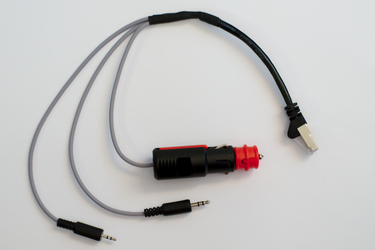

Anschlusskabel und Jumper Board¶
Konzept¶
Um das bt-trx mit einer maximal großen Anzahl an Funkgeräten kompatibel zu machen, ist die Belegung der RJ45 Buchse J1 frei konfigurierbar.
In der Regel wird bt-trx an der Buchse für das Handmikrofon des Transceivers
angeschlossen.
bt-trx kann natürlich auch an die NF Buchse des Funkgeräts angeschlossen werden.
Damit bleibt die Mikrofonbuchse frei zur Verwendung mit dem Handmikrofon.
Somit kann man beides benutzen ohne Umstecken zu müssen oder auch das Lautsprechersignal
mit abgegriffen werden, falls dies nicht an der Mikrofonbuchse anliegt.
Hilfe!
Offene Fragen werden am besten im Forum oder unserer Telegram-Gruppe beantwortet.
Jumper Board¶
Durch das Jumper Board kann die RJ45 Buchse komplett frei belegt werden. Damit ist es z.B. möglich manche Transceiver welche bereits über eine RJ45 Buchse verfügen, direkt mit einem standard Netzwerkkabel zu verbinden. Dadurch entfällt die Konfektion eines Anschlusskabels.
Der Abstand der beiden Buchsenleisten ist im 2.54 mm Raster. Damit kann auch aus Lochraster ein Jumperboard gebaut werden.
Im bt-trx Kit wird ein Generic Jumper Board mitgeliefert, welches via Lötjumper und Drähten angepasst werden kann. Dieses kann bei Wechsel des Transceivers einfach ausgetauscht werden.
Galvanische Trennung der Masseleitungen¶
Da verschiedene Transceiver über unterschiedliche Massekonzepte verfügen, haben wir uns dazu entschieden alle Masseleitungen separat an das Jumper Board zu führen. Die galvanische Trennung der analogen und digital Signale erfolgt über für das Audiosignal über Transformatoren sowie mit einem Optokoppler für PTT.
bt-trx verfügt über 4 Massepfade:
- PWR_GND: Masse für alle digitalen Bausteine sowie die Spannungsversorgung
- MIC_GND: Masse für das Mikrofon des TRX
- TRX_GND: Masse des TRX sowie des TRX Lautsprecherausgangs
- PTT_GND: Masse des PTT (Emitter am Opotkoppler)
Über das Jumperboard können die jeweiligen Massen beliebig untereinander und mit dem Transceiver verbunden werden.
Spannungsversorgung¶
bt-trx bietet zwei Möglichkeiten um mit Spannung versorgt zu werden:
- Buchse J5: V_IN und PWR_GND, 5...15 V DC, oder
- Mikro-USB Buchse des ESP32
Manche Funkgeräte verfügen über einen Versorgungsspannungsausgang mit ausreichender Spannung und Leistung. Falls nein, kann es erforderlich sein, die Spannung extern zuzuführen (z.B. über Zigarettenanzünder oder USB).
Externe Absicherung vorsehen!
Auf der Platine befindet sich eine selbstrückstellende (PTC) Sicherung (250 mA Fast Trip, max. 24 DC), allerdings wird dringend empfohlen, im Anschlusskabel zusätzlich eine konventionelle Sicherung mit entsprechenden Werten einzubauen.
Informationen zum Stromverbrauch gibt es hier.
Generic Jumper Board¶
Das Generic Jumper Board verfügt über Lötaugen und Löt Jumper zur individuellen Anpassung.
Auf der linken Seite befinden sich die Pins zum bt-trx, auf der rechten zum RJ45 J1.
Pinnummerierung J1
Die Pinnummerierung des RJ45 Steckers entspricht dem T568B Standard, wie er auch in der Netzwerktechnik verwendet wird. Einige Transceiver ensprechen jedoch nicht diesem Standard und haben eine gespiegelte Pinnummerierung. Bitte bei der Konfektionierung beachten
Mittig auf der Oberseite sind vier miteinander verbundenen Lötaugen (weißes quadrat) integirert, welche zur einfacheren Verbindung der Masseleitungen verwedet werden können.
Die Lötjumper dienen zur direkten 1:1 Durchkontaktierung. Die Standardanordung ist so gestaltet, dass die twisted-pair Paare eines Netzwerkkabels MIC + MIC_GND, SPK + TRX_GND sowie V_IN + PWR_GND ensprechen.
Beispiele¶
Grafische Darstellung des Generic Jumper Boards
Die mit z.B. Litze zu verbindenden Lötaugen sind durch farbige Linien dargestellt. Zu verbindende Lötjumper sind durch magentafarbene Punkte gekennzeichnet.
Handfunkgeräte (2.5mm und 3.5 mm Klinke)¶
Anytone, Baofeng, Kenwood, Wouxun¶
Belegung des RJ45 Steckers J1 unter Verwendung eines Netwerkkabels:
| Kontakt | Signal | Belegung J1 | Signal bt-trx |
|---|---|---|---|
| 3.5 mm Tip | +5V | -- | -- |
| 3.5 mm Ring | MIC+ | 4 | MIC |
| 3.5 mm Sleeve | MIC-/PTT | 5 | PTT |
| 2.5 mm Tip | SPK+ | 6 | SPK |
| 2.5 mm Ring | Prog | -- | -- |
| 2.5 mm Sleeve | SPK-/PTT | 3 | TRX_GND, PTT_GND, MIC_GND |
| Fahrzeugstecker + | 12V | 1 | V_IN |
| Fahrzeugstecker - | GND | 2 | PWR_GND |
Beispiel für ein Adapterkabel mit Klinkenstecker

Kenwood¶
TM-D700¶

| Pin | Signal | Belegung J1 | Signal bt-trx |
|---|---|---|---|
| 1 | DWN | 1 | -- |
| 2 | -- | 2 | -- |
| 3 | MIC | 3 | MIC |
| 4 | GND (MIC) | 4 | MIC_GND |
| 5 | STBY (PTT) | 5 | PTT |
| 6 | GND | 6 | TRX_GND, PTT_GND, PWR_GND |
| 7 | 8 V, max. 200 mA | 7 | V_IN |
| 8 | UP | 8 | -- |
Zur Verbindung des bt-trx mit dem TM-D700 kann nun ein handelsübliches Netzwerkkabel verwendet werden.
Die Spannungsversorgung des bt-trx erfolgt direkt über das Funkgerät. Der Mikrofonstecker verfügt über keinen Lausprecherausgang. Im obigen Beispiel wird das Audiosignal des Transceivers nicht zum bt-trx durchgeschleift.
TM-D710¶
| Pin | Signal | Belegung J1 | Signal bt-trx |
|---|---|---|---|
| 1 | Keypad Serial | -- | -- |
| 2 | -- | -- | -- |
| 3 | MIC | 3 | MIC |
| 4 | GND (MIC) | 4 | MIC_GND |
| 5 | PTT | 5 | PTT |
| 6 | GND | 6 | TRX_GND, PTT_GND |
| 7 | 8 V, max. 100 mA | -- | V_IN |
| 8 | UP | -- | -- |
| Fahrzeugstecker + | 12V | 1 | V_IN |
| Fahrzeugstecker - | GND | 2 | PWR_GND |
Die Spannungsversorgung des bt-trx (br (+)/BR (-)) muss extern zugeführt werden oder über USB erfolgen, da die 100mA des TM-D710 nicht ausreichen. Im obigen Beispiel wird das Rx-Audiosignal des Transceivers nicht zum bt-trx durchgeschleift.
ICOM (nicht getestet)¶
| Pin | Signal | Belegung J1 | Signal bt-trx |
|---|---|---|---|
| 1 | +8 V, 10 mA max. | -- | -- |
| 2 | UP/DWN | -- | -- |
| 3 | M8V SW | -- | -- |
| 4 | PTT | 4 | PTT |
| 5 | GND (MIC) | 5 | MIC_GND |
| 6 | MIC | 6 | MIC |
| 7 | GND | 7 | TRX_GND, PTT_GND |
| 8 | SQL | -- | -- |
| Fahrzeugstecker + | 12V | 1 | V_IN |
| Fahrzeugstecker - | GND | 2 | PWR_GND |
Die Spannungsversorgung des bt-trx (br (+)/BR (-)) muss extern zugeführt werden oder über USB erfolgen, da die 10mA der ICOM Mikrofonbuchse nicht ausreichen. Im obigen Beispiel wird das Rx-Audiosignal des Transceivers nicht zum bt-trx durchgeschleift.